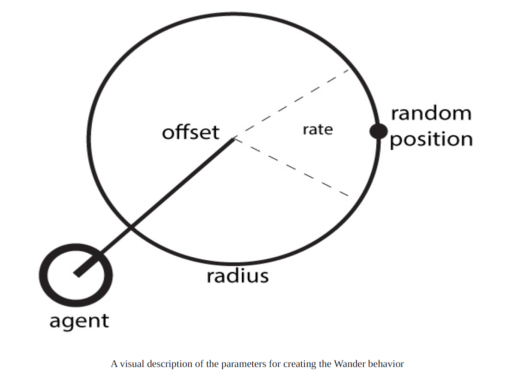

Getting ready
We need to add another function to our AgentBehaviour class called OriToVec,
which converts an orientation value to a vector:1
2
3
4
5
6
7
8
9
10
11/// <summary>
/// Changes the orientation float value to a Vector3
/// </summary>
/// <param name="orientation"></param>
/// <returns></returns>
public Vector3 OriToVec (float orientation) {
Vector3 vector = Vector3.zero;
vector.x = Mathf.Sin(orientation * Mathf.Deg2Rad) * 1.0f;
vector.z = Mathf.Cos(orientation * Mathf.Deg2Rad) * 1.0f;
return vector.normalized;
}
How to do it…
We can regard it as a big three-step process in which we first manipulate the
internal target position in a parameterized random way, face that position, and
move accordingly:
Create the Wander class deriving from Face:
1
2
3
4
5
6
7
8using UnityEngine;
using System.Collections;
public class Wander : Face
{
public float offset;
public float radius;
public float rate;
}Define the Awake function in order to set up the internal target:
1
2
3
4
5
6public override void Awake()
{
target = new GameObject();
target.transform.position = transform.position;
base.Awake();
}Define the GetSteering function:
1
2
3
4
5
6
7
8
9
10
11
12
13
14
15public override Steering GetSteering()
{
Steering steering = new Steering();
float wanderOrientation = Random.Range(-1.0f, 1.0f) * rate;
float targetOrientation = wanderOrientation + agent.orientation;
Vector3 orientationVec = OriToVec(agent.orientation);
Vector3 targetPosition = (offset * orientationVec) + transform.position;
targetPosition = targetPosition + (OriToVec(targetOrientation) * radius);
targetAux.transform.position = targetPosition;
steering = base.GetSteering();
steering.linear = targetAux.transform.position - transform.position;
steering.linear.Normalize();
steering.linear *= agent.maxAccel;
return steering;
}
How it works…
The behavior takes two radii in order into consideration to get a random
position to go next, looks toward that random point, and converts the
computed orientation into a direction vector in order to advance:
